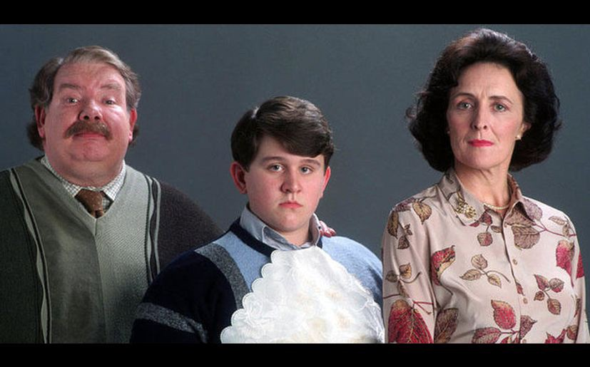

|
|
You're a Muggle!
About:
1. Muggles(non-magic people) are humans who are born to two non-magical parents and are incapable of performing magic.
2. Most Muggles have been unaware that magic and the wizarding world exist since the establishment of the International Statute of Wizarding Secrecy in 1692, as wizards have organised their own society largely separate from the Muggle world.
3. Muggles are also known as No-Majes (USA), Can't-Spells, Non-Wizards, Non-Magiques (France), etc...
|
 |